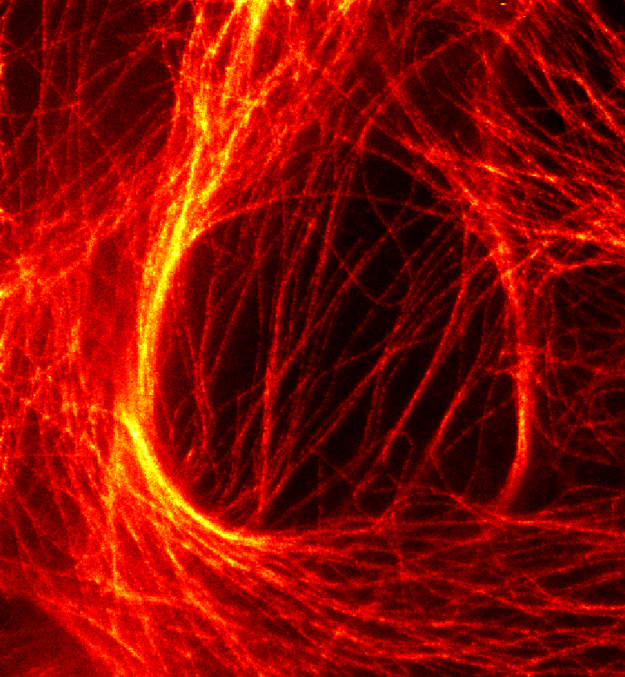

Nanoparticle probes & super-resolution
Upconverting nanoparticles for multicolor imaging, from photostable tracking probes to blinking probes for super-resolution measurements.
Physical chemistry · Biophysics · Machine Learning
Following molecules.
Extracting mechanisms.
I study molecular behavior through single-molecule imaging of proteins in live cells, connecting dynamics with biological questions.
Ph.D Candidate · MIT Chemistry
Peng Lab · Broad Institute of MIT and Harvard
My research explores how nanoparticle probes can reveal the behavior of individual molecules, and how we can extract biological insights from such data.
My publications span applications of upconverting nanoparticles in long-term single-particle tracking, receptor dynamics, and physical instrumentation. I previously studied Molecular Engineering and Physics at the University of Chicago.
Tools to observe molecular motion
and understand biological mechanisms.
Upconverting nanoparticles for multicolor imaging, from photostable tracking probes to blinking probes for super-resolution measurements.
Novel data requires novel algorithms for analysis.
Direct observation of ErbB receptor interactions to investigate dimerization and dysregulation in cellular signaling.
HIGHLIGHT

5 works listed in ORCID
No publications match your search.
Publication metadata from my public ORCID record. Last refreshed .